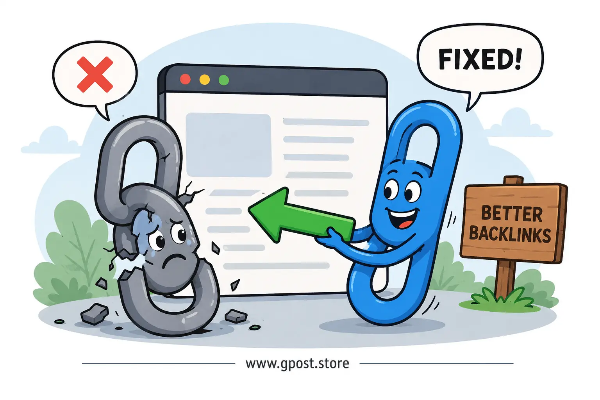
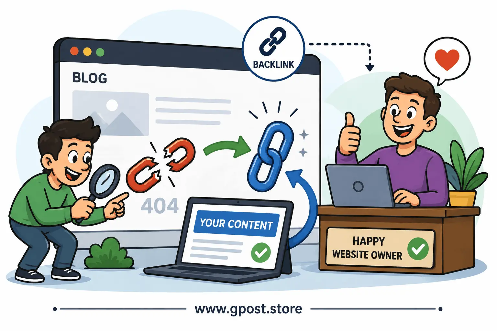

Broken Link Building Strategy (2026 Guide): The Ultimate SEO Blueprint for High-Quality Backlinks
Broken Link Building Strategy (2026 Guide) is one of the most effective white-hat SEO techniques for earning powerful backlinks in today’s competitive search landscape. Instead of spamming websites for links, this strategy focuses on helping site owners fix broken resources while replacing them with your valuable content.
In 2026, Google continues rewarding websites that earn natural, relevant, and authority-driven backlinks. That’s exactly why broken link building remains one of the safest and most scalable link building strategies for SEO professionals, agencies, bloggers, affiliate marketers, and niche site owners.
This guide will teach you everything you need to know about broken link outreach, including:
- What broken link building is
- What is the main goal of broken link building
- How to find broken link opportunities
- How to Make Backlinks with Broken Link Building
- Real outreach methods
- Broken link building strategy template
- Broken link building strategy example
- Advanced SEO tips for 2026

Broken link building helps websites replace dead links while earning high-quality backlinks.
What is Broken Link Building Strategy (2026 Guide)?
Broken Link Building Strategy (2026 Guide) is an SEO outreach technique where you discover broken outbound links on websites and suggest your own relevant content as a replacement. In return, the website owner may replace the dead link with your page, giving you a valuable backlink.
Broken links are URLs that no longer work. These usually lead to:
- 404 pages
- Deleted resources
- Expired domains
- Removed blog posts
- Outdated tools or guides
Website owners often do not realize these links are broken. That creates a perfect opportunity for SEO professionals.
Simple Example
Imagine a marketing blog links to an old SEO guide that no longer exists. You create a fresh updated article covering the same topic. Then you email the site owner and politely suggest your article as a replacement.
If accepted, you earn a contextual backlink from a relevant website.
What is the Main Goal of Broken Link Building?
The main goal of broken link building is to acquire high-quality backlinks while helping websites improve user experience by replacing dead links with working resources.
Unlike spammy SEO tactics, broken link building creates value for both sides:
- The website fixes a broken resource
- You earn a contextual backlink
- Users get a better browsing experience
- Search engines see improved quality signals
Guest Post Link Building is closely related to broken link outreach and strengthens overall backlink strategy.
Major Benefits of Broken Link Building
- Earn white-hat backlinks
- Improve domain authority
- Increase organic rankings
- Build niche relevance
- Get referral traffic
- Create outreach relationships
- Scale SEO naturally
Why Broken Link Building Strategy (2026 Guide) Matters in SEO
Backlinks remain one of Google’s strongest ranking signals. However, modern SEO is no longer about quantity alone. Relevance, authority, and editorial context matter more than ever.
Broken link building solves that challenge naturally.
1. Builds High-Quality Backlinks
Because your link replaces an existing editorial reference, it appears naturally within the content. These contextual backlinks often carry stronger SEO value than sidebar or footer links.
2. Improves Domain Authority
When authority websites link to your content, your domain authority increases over time. This can improve rankings across multiple pages.
3. Generates Relevant Traffic
Visitors clicking your replacement link are already interested in your topic. This means higher engagement and lower bounce rates.
4. Supports White-Hat SEO
Google prefers natural link acquisition. Broken link outreach focuses on value instead of manipulation.
5. Scales Across Niches
This strategy works in almost every industry:
- SEO
- Health
- Technology
- Finance
- Travel
- Education
- SaaS
- Marketing

Relevant backlinks help improve rankings, authority, and organic search visibility.
Types of Broken Link Building Opportunities
1. Resource Pages
Resource pages are one of the easiest opportunities because they contain many outbound links.
Examples:
- Best SEO tools
- Marketing resources
- Educational references
- Industry guides
2. Blog Posts
Many old blog posts contain outdated references or dead URLs. These are perfect outreach targets.
3. Niche Edit Opportunities
Niche edits involve inserting your replacement link into an existing article instead of publishing a new guest post.
Understanding Guest Posting vs Niche Edits helps you choose the right link acquisition method for better SEO results.
4. Competitor Broken Backlinks
You can analyze competitors and identify links pointing to pages that no longer exist.
5. Expired Domains
Sometimes high-authority websites link to expired domains. Replacing those references can produce strong backlink opportunities.
How to Find Broken Link Opportunities
Finding broken links is the foundation of successful outreach campaigns.
Use Google Search Operators
Search operators help you locate resource pages and old content.
Examples:
- "SEO resources"
- "marketing links"
- "recommended tools"
- "helpful articles"
- "useful websites"
Find Broken Pages with SEO Tools
Popular SEO tools include:
- Ahrefs
- Semrush
- Screaming Frog
- Moz
- Check My Links Chrome Extension
Analyze Competitor Backlinks
Competitor research is extremely effective.
Steps:
- Enter competitor domain into Ahrefs
- Check broken backlinks
- Identify dead pages
- Create better content
- Contact linking sites
Use Browser Extensions
Chrome extensions can instantly detect broken links while browsing websites.
Helpful tools:
- Check My Links
- LinkMiner
- Broken Link Checker
How to Make Backlinks with Broken Link Building
Many beginners ask: “How to Make Backlinks with Broken Link Building?”
The answer is surprisingly simple.
Step 1: Find Relevant Broken Links
Search for websites in your niche with outdated resources.
Step 2: Create Better Replacement Content
Your replacement content should:
- Be updated
- Offer more value
- Use visuals
- Include actionable insights
- Be beginner-friendly
Step 3: Reach Out Politely
How to Pitch Bloggers Effectively can improve your outreach acceptance rate significantly.
Step 4: Follow Up
Many website owners respond after the second email.
Step 5: Track Your Backlinks
Use backlink monitoring tools to confirm placement.
Step-by-Step Broken Link Building Strategy (2026 Guide)
Step 1: Research Relevant Websites
Focus on websites that:
- Belong to your niche
- Have real organic traffic
- Publish quality content
- Maintain editorial standards
Step 2: Identify Broken Links
Scan pages for broken outbound links using SEO tools.
Step 3: Create High-Value Content
Your content should be better than the original dead resource.
Include:
- Statistics
- Visuals
- Examples
- Case studies
- Updated information
Step 4: Find Contact Information
Use:
- Contact pages
- LinkedIn
- Hunter.io
- About pages
Step 5: Send Outreach Emails
Keep emails short and personalized.
Step 6: Build Relationships
Long-term outreach relationships can lead to:
- Guest blogging opportunities
- Niche edits
- Partnerships
- Future collaborations
Broken Link Building Strategy Template
Here is a simple broken link building strategy template you can customize.
Email Outreach Template
Hello [Name],
I was reading your article on [Topic] and noticed one of the external links is currently broken.
The broken URL appears here: [Broken Link]
I recently published an updated resource covering the same topic that may help your readers.
Here’s the link: [Your URL]
Either way, I thought I’d let you know about the broken page.
Thanks,
Your Name
Broken Link Building Strategy Example
Let’s look at a real-world broken link building strategy example.
Scenario
You operate an SEO blog about link building.
You discover a marketing website linking to a deleted article titled:
“Advanced Link Building Techniques”
Your Process
- Create an updated guide
- Add fresh 2026 SEO data
- Include outreach templates
- Add case studies
- Contact the website owner
Result
The site owner replaces the dead link with your article.
You gain:
- A contextual backlink
- Referral traffic
- Higher authority
- Better keyword rankings
Common Broken Link Building Mistakes
1. Sending Generic Outreach Emails
Mass outreach rarely works anymore.
Always personalize emails.
2. Ignoring Relevance
Only pursue backlinks from niche-relevant websites.
3. Using Low-Quality Content
If your replacement content lacks quality, webmasters will ignore your request.
4. Over-Optimized Anchor Text
Natural anchors look safer to Google.
5. Targeting Spammy Websites
Avoid websites with:
- Thin content
- AI spam
- Low trust
- High outbound link spam
Advanced SEO Tips for Broken Link Outreach
Focus on Niche Relevance
Relevant backlinks outperform random authority links.
Use Internal Linking
Strengthen your replacement pages with smart internal links.
Improve Content Design
Better formatting increases acceptance rates.
Use:
- Short paragraphs
- Bullet points
- Visuals
- Statistics
- Expert quotes
Leverage Guest Blogging
Sometimes broken link outreach can lead to guest blogging opportunities.
Track Outreach Metrics
Measure:
- Reply rates
- Placement rates
- Backlinks earned
- Traffic growth
Is Broken Link Building Strategy (2026 Guide) Still Worth It?
Absolutely.
In fact, broken link building is becoming more valuable because many outdated websites continue accumulating dead links over time.
As long as the internet evolves, links will break.
That means opportunities will continue growing.
Why It Still Works in 2026
- Websites constantly update content
- Pages get deleted regularly
- Expired domains increase
- Google values editorial backlinks
- Helpful outreach still converts
When to Avoid Broken Link Building
Broken link building is powerful, but not always ideal.
Avoid It If:
- You have weak content
- Your website lacks trust
- You target irrelevant niches
- You rely on spam automation
- You expect instant results
Broken link building requires patience and quality.
Google Guidelines and SEO Safety
Always follow ethical SEO practices.
Google rewards websites that earn links naturally.
Best Practices
- Prioritize quality over quantity
- Avoid link schemes
- Focus on relevance
- Create original content
- Use natural anchor text
FAQs About Broken Link Building Strategy (2026 Guide)
1. What is guest posting?
Guest posting is the practice of publishing articles on another website to gain exposure, authority, and backlinks.
2. Is broken link building safe?
Yes. Broken link building is considered a white-hat SEO strategy because it focuses on helping websites improve user experience.
3. How much does broken link building cost?
Costs vary depending on tools, outreach, and content creation. Many SEO professionals perform it manually with affordable tools.
4. How do I find broken link websites?
You can use SEO tools like Ahrefs, Semrush, Screaming Frog, and browser extensions like Check My Links.
5. Does broken link building still work in 2026?
Yes. It remains one of the most effective white-hat link building methods for earning contextual backlinks naturally.
Conclusion
Broken Link Building Strategy (2026 Guide) remains one of the most practical and scalable SEO methods for earning high-quality backlinks naturally. Instead of chasing spammy links, this approach focuses on value, relevance, and relationship building.
By finding broken resources, creating stronger replacement content, and conducting smart outreach, you can improve rankings, increase domain authority, and grow organic traffic safely in 2026.
The key is simple:
- Create genuinely useful content
- Focus on niche relevance
- Build relationships
- Prioritize quality over quantity
- Stay consistent